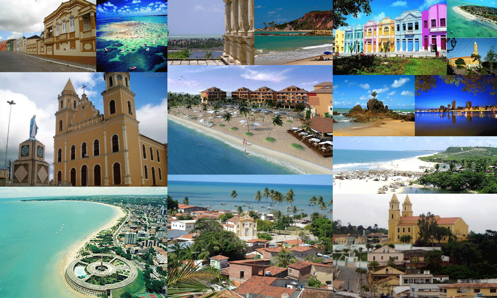
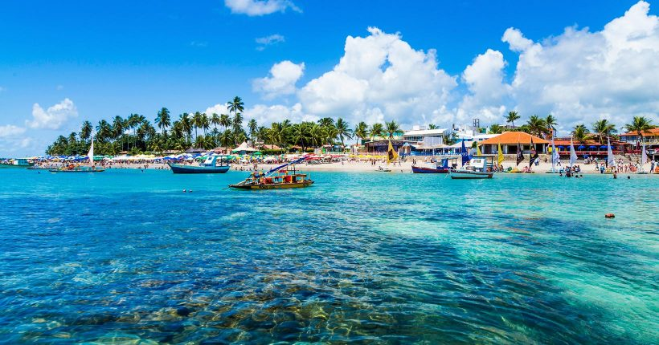
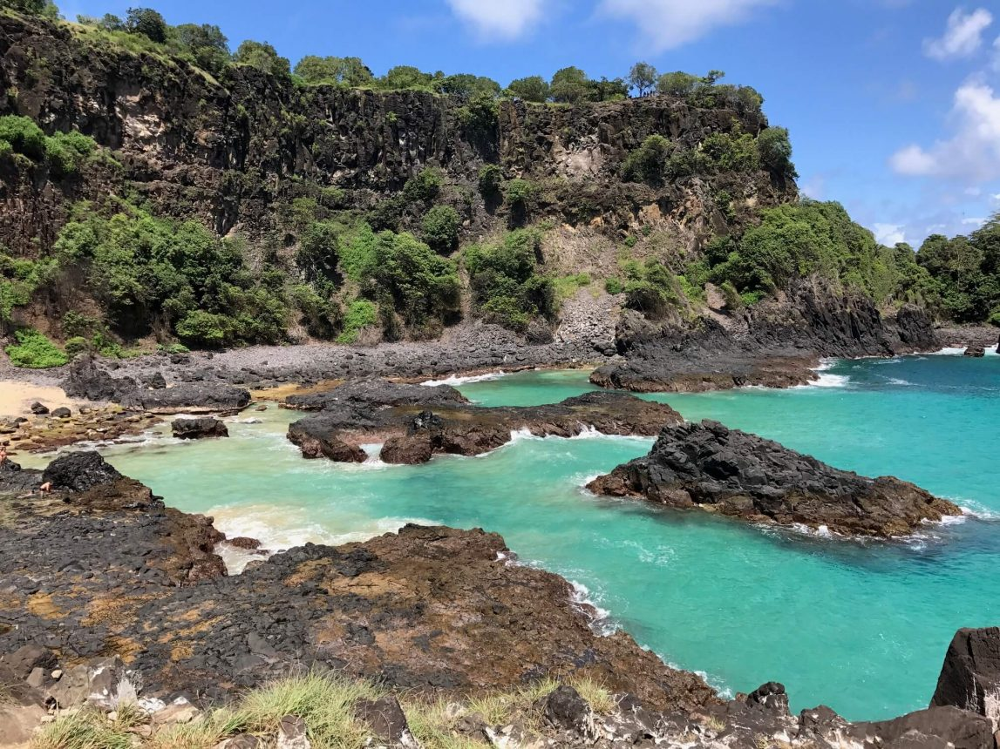
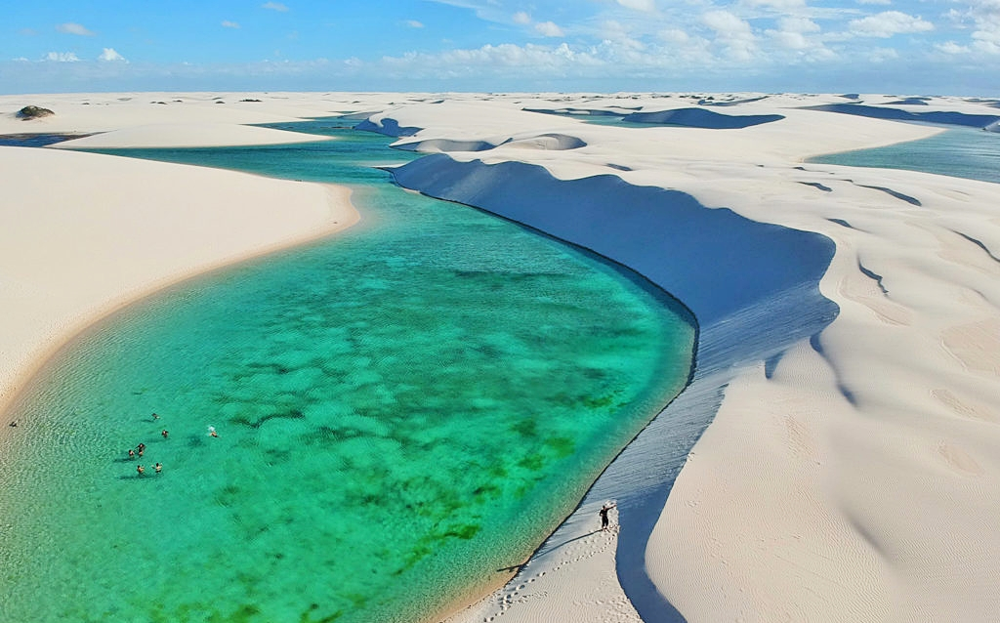

Turismo no Nordeste
Postado em 23 de julho de 2022

Os melhores destinos do Nordeste têm praias de mar quente, azul, esverdeado, dunas, falésias, rios, manguezais, ilhas, chapadas, cidades históricas e gastronomia arretada. São inúmeros argumentos que endossam a mesma afirmação: o Nordeste é um imperdível destino de férias para quem busca dias de descanso em alguns dos melhores destinos de viagem do Brasil.
Leia Mais
Porto de Galinhas
Postado em 23 de julho de 2022

Águas mornas, esverdeadas e agradáveis durante todo o ano fazem de Porto de Galinhas um dos principais destinos do litoral nordestino. Da Praia da Vila saem as jangadas que levam os turistas até as famosas piscinas naturais, onde se pode facilmente ver peixinhos de todos os jeitos. Importante destino que é, Porto de Galinhas está preparada para receber seus visitantes: há boas e variadas opções de hospedagem, boa gastronomia e ruas com lojinhas de artesanato para os agradáveis passeios noturnos.
Leia Mais
Fernando de Noronha
Postado em 23 de julho de 2022

Considerado Patrimônio Mundial da UNESCO, o arquipélago de Fernando de Noronha possui um delicado ecossistema. Há restrição no número de visitantes, mas os poucos afortunados são recompensados com praias inigualáveis e águas quentes, calmas e repletas de golfinhos e tartarugas marinhas, o que torna Noronha um dos melhores destinos de mergulho do mundo. Em terra, caminhe pelas trilhas ecológicas do Jardim Elizabeth, da Costa Esmeralda ou da Baía do Sancho, que culmina com uma descida por um conjunto íngreme de escadas esculpidas na divisão de uma falésia.
Leia Mais
Lençóis Maranhenses
Postado em 23 de julho de 2022

A areia branca e fina marca o paradisíaco caminho percorrido pelos viajantes em meio ao Parque Nacional dos Lençóis Maranhenses. As lagoas de água doce entre as dunas formam um cenário único em todo o mundo e é impossível não se emocionar ao chegar no topo da paisagem e ver a imensidão dos Lençóis Maranhenses. Localizados no noroeste do Maranhão e distantes 250 km da capital São Luís, os Lençóis Maranhenses atraem turistas em busca do fenômeno único das lagoas interdunares à beira-mar. E o melhor dos Lençóis Maranhenses é que, a cada nova porção de água entre as dunas, a sensação de estar no paraíso se repete. Está com viagem marcada para os Lençóis Maranhenses ou tem o sonho de ir até lá? Prepare-se para conhecer um dos lugares mais incríveis do Brasil e do mundo!
Leia Mais